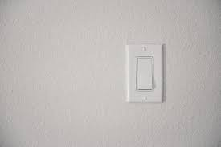

How Light Switches Work
Home History How Light Switches Work Items/Hardware Needed How to Replace a Light Switch Resources
Why are light switches necessary?
Hint: Hover over the image below to find out!

To get a better understanding on how light switches work, please watch the video below.